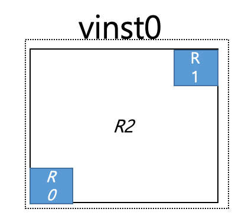
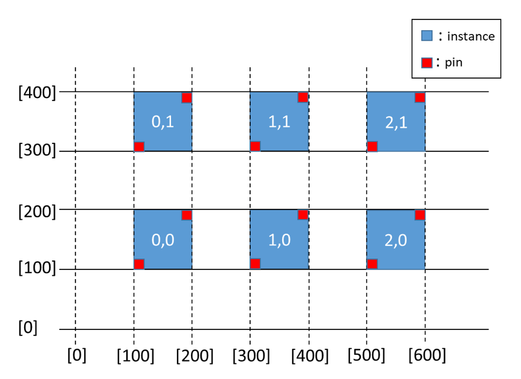
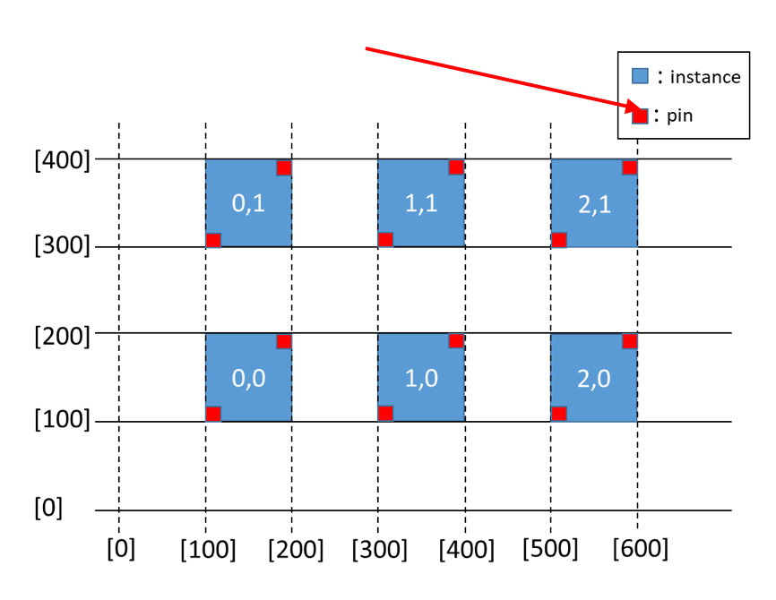
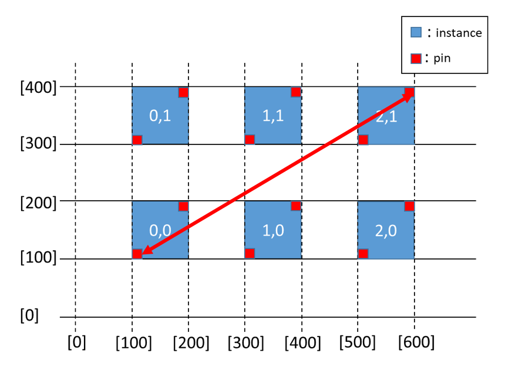
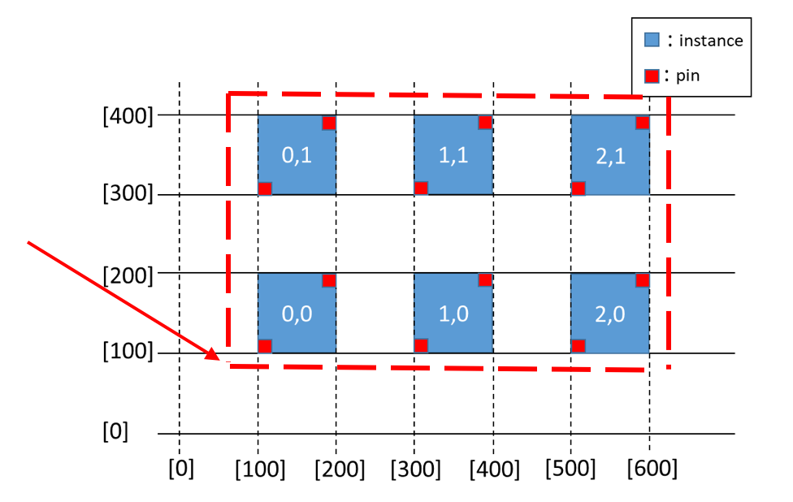
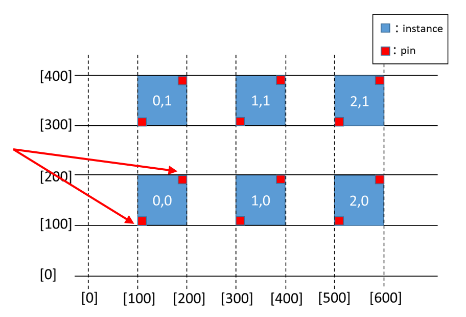
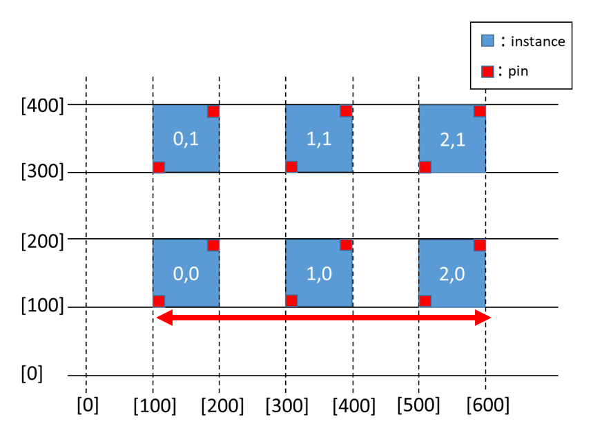
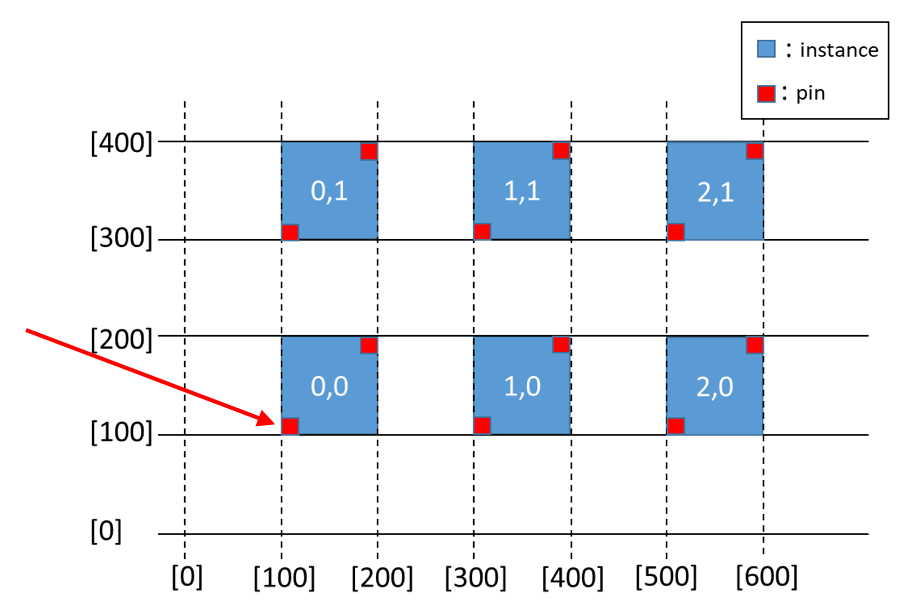
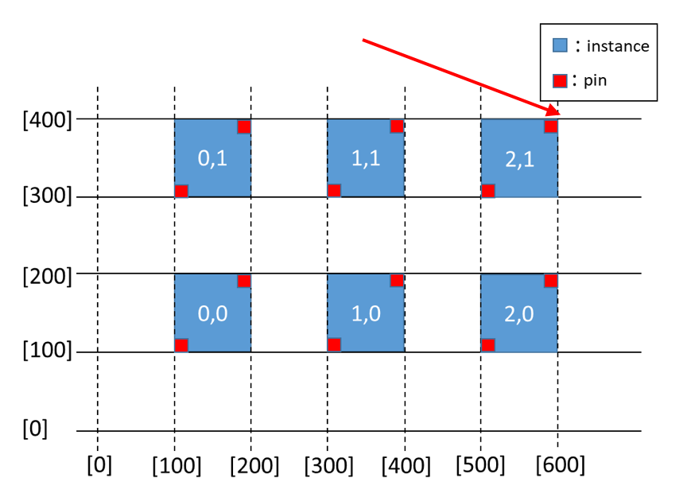

VirtualInstance class
- class laygo2.object.physical.VirtualInstance(xy, libname, cellname, native_elements, viewname='layout', shape=None, pitch=None, transform='R0', unit_size=array([0, 0]), pins=None, name=None, params=None)[source]
Bases:
laygo2.object.physical.InstanceVirtualInstance object class.
Notes
Reference in Korean: VirtualInstance 객체 클래스.
Public Data Attributes:
The dictionary containing physical entities constituting the object.
Inherited from
InstanceThe library name of the object.
The cellname of the instance object.
The view name of the instance.
The shape of the instance mosaic.
Unit size when the object is constructed in array.
The transformation attribute of the object.
The dictionary having the pins belonging to the object.
Get the x and y coordinate values of this object.
The coordinates of the primary corner of the object.
The coordinates of the secondary corner of the object.
The size of the object.
Get the pitch of the instance.
The physical bounding box of the object.
The height of the object.
The width of the object.
The height vector [0, height].
The width vector [width, 0].
Inherited from
IterablePhysicalObjectThe numpy array that contains this object's subelements as its elements.
Get the x and y coordinate values of this object.
The shape of the instance mosaic.
Inherited from
PhysicalObjectThe name of the object.
Get the x and y coordinate values of this object.
The master of the current object (for array and pin objects).
The dictionary that contains the object parameters.
The dictionary that contains major physical coordinates of the object.
The left-center coordinate of the object.
The right-center coordinate of the object.
The top-center coordinate of the object.
The bottom-center coordinate of the object.
The center-center coordinate of the object.
The bottom-left coordinate of the object.
The bottom-right coordinate of the object.
The top-left coordinate of the object.
The top-right coordinate of the object.
The physical bounding box of the object.
Public Methods:
__init__(xy, libname, cellname, native_elements)The constructor function of VirtualInstance class.
Summarize object information.
get_element_position(obj)Get element's xy-position from origin.
Inherited from
Instancenumpy.ndarray(dtype=int): Get the pitch of the instance.
set_pitch(value)numpy.ndarray(dtype=int): Set the pitch of the instance.
set_spacing(value)__init__(xy, libname, cellname, native_elements)The constructor function of VirtualInstance class.
Summarize object information.
Inherited from
IterablePhysicalObject__init__(xy, libname, cellname, native_elements)The constructor function of VirtualInstance class.
__getitem__(pos)Return the sub-elements of this object, based on the pos parameter.
__setitem__(pos, item)Set the sub-elements of this object, based on the pos and item parameter.
__iter__()Iterator function.
__next__()Iterator function.
Enumerate over the element array.
Inherited from
PhysicalObject__init__(xy, libname, cellname, native_elements)The constructor function of VirtualInstance class.
__str__()Return the summary of this object.
Summarize object information.
- __init__(xy, libname, cellname, native_elements, viewname='layout', shape=None, pitch=None, transform='R0', unit_size=array([0, 0]), pins=None, name=None, params=None)[source]
The constructor function of VirtualInstance class.
- Parameters
xy (numpy.ndarray) – The primary coordinate [x0, y0] of the object.
libname (str) – The library name of the object.
cellname (str) – The cell name of the object.
native_elements (dict) – The dictionary containing physical entities constituting the object.
shape (numpy.ndarray) – The shape [col, row] of the elements.
pitch (numpy.ndarray) – Pitch between elements of the object in array.
transform (str) – The transformation attribute of the object.
unit_size (list) – Unit size of object.
pins (dict) – The dictionary containing pins belonging to the object.
name (str) – The name of the object.
params (dict) – The dictionary containing attributes of the object.
- Return type
object (laygo2.VirtualInstance)
See also
ClassExample
>>> vinst0 = physical.VirtualInstance(name='I0', libname='mylib', cellname='myvcell', xy=[500, 500], native_elements=vinst0_native_elements, shape=[3, 2], pitch=[100, 100], unit_size=[100, 100], pins=vinst0_pins, transform='R0’) >>> vinst0.native_elements { ‘R0’ : physical.Rect, ‘R1’ : physical.Rect, ‘R2’ : physical.Rect }
Notes
Reference in Korean: VirtualInstance 클래스의 생성자 함수
파라미터
xy(numpy.ndarray): 객체의 주좌표 [x0, y0]
libname(str): 객체의 library 이름
cellname(str): 객체의 cell이름
native_elements(dict): 객체를 구성하는 물리객체를 갖는 Dict
shape(numpy.ndarray): elements 의 shape
pitch(numpy.ndarray): 배열로 구성된 객체의 하위객체간 간격
transform(str): 객체의 변환 속성
unit_size(list): 객체의 단위 크기
pins(dict): 객체에 속한 핀들을 갖는 Dictionary
name(str): 객체의 이름
params(dict): 객체의 속성을 갖는 Dictionary
반환값
object (laygo2.VirtualInstance)
참조
Class Instance
- _get_xy()
numpy.ndarray(dtype=numpy.int): Get the x and y coordinate values of this object.
- _set_xy(value)
numpy.ndarray(dtype=numpy.int): Set the x and y coordinate values of this object.
- _update_elements(xy_ofst)
Update xy-coordinates of this object’s elements. An internal function for _set_xy()
- _update_pins(xy_ofst)
Update xy-coordinates of this object’s pins. An internal function for _set_xy()
- _update_pointers()
Update pointers of this object. Called when the xy-coordinate of this object is updated.
- get_element_position(obj)[source]
Get element’s xy-position from origin.
- Parameters
obj (element) – element belongs to self
- get_pitch()
numpy.ndarray(dtype=int): Get the pitch of the instance.
- get_spacing()
- ndenumerate()
Enumerate over the element array. Calls np.ndenumerate() of the elements of this object.
- set_pitch(value)
numpy.ndarray(dtype=int): Set the pitch of the instance.
- set_spacing(value)
- _xy = array([0, 0])
The internal variable of xy.
- Type
numpy.ndarray(dtype=numpy.int)
- property bbox
The physical bounding box of the object.
Example
>>> physical = object.physical.PhysicalObject( xy = [[0, 0], [200, 200]], name="test", params=None) >>> physical.xy [ [0,0], [200,200] ]

Notes
Reference in Korean: numpy.ndarray: Physical 객체의 bbox.
- Type
- bottom = None
The bottom-center coordinate of the object.
Example
>>> physical = object.physical.PhysicalObject( xy = [[0, 0], [200, 200]], name="test", params=None) >>> physical.bottom [ 100, 0 ]

Notes
Reference in Korean: Physical 객체의 bottom pointer.
- Type
- bottom_left = None
The bottom-left coordinate of the object.
Example
>>> physical = object.physical.PhysicalObject( xy = [[0, 0], [200, 200]], name="test", params=None) >>> physical.bottom_left [ 0,0 ]

Notes
Reference in Korean: Physical 객체의 bottom_left pointer.
- Type
- bottom_right = None
The bottom-right coordinate of the object.
Example
>>> physical = object.physical.PhysicalObject( xy = [[0, 0], [200, 200]], name="test", params=None) >>> physical.bottom_right [200, 0]

Notes
Reference in Korean: Physical 객체의 bottom_right pointer.
- Type
- cellname = None
The cellname of the instance object.
Example
>>> inst0_pins = dict() >>> inst0_pins[‘in’] = physical.Pin( xy = [[0, 0], [10,10]], layer = ['M1', 'drawing'], netname = 'in’) >>> inst0_pins[‘out’]= physical.Pin( xy = [[90, 90], [100, 100]], layer=['M1', 'drawing'], netname='out’) >>> inst0 = physical.Instance( name = "I0", xy = [ 100,100], libname="mylib", cellname="mycell", shape = [3,2], pitch = [200,200], unit_size = [100, 100], pins = inst0_pins , transform = 'R0’) >>> inst0.cellname mycell

Notes
Reference in Korean: 객체가 속한 셀 이름.
- Type
- center = None
The center-center coordinate of the object.
Example
>>> physical = object.physical.PhysicalObject( xy = [[0, 0], [200, 200]], name="test", params=None) >>> physical.center [ 100, 100 ]

Notes
Reference in Korean: Physical 객체의 center pointer.
- Type
- elements = None
The numpy array that contains this object’s subelements as its elements.
Example
>>> phy0 = physical.IterablePhysicalObject( xy=[[0, 0], [100, 100]], name="test" ) >>> phy1 = physical.IterablePhysicalObject( xy=[[0, 0], [200, 200]], name="test") >>> phy2 = physical.IterablePhysicalObject( xy=[[0, 0], [300, 300]], name="test") >>> element = [phy0, phy1, phy2] >>> iphy0 = physical.IterablePhysicalObject( xy=[[0, 0], [300, 300]], name="test", elements = element) >>> iphy0.elements [physical.IterablePhysicalObject object, physical.IterablePhysicalObject object, physical.IterablePhysicalObject object ]
Notes
Reference in Korean: 객체의 하위 구성원.
- Type
- property height
The height of the object.
Example
>>> inst0_pins = dict() >>> inst0_pins[‘in’] = physical.Pin( xy = [[0, 0], [10,10]], layer = ['M1', 'drawing'], netname = 'in’) >>> inst0_pins[‘out’]= physical.Pin( xy = [[90, 90], [100, 100]], layer=['M1', 'drawing'], netname='out’) >>> inst0 = physical.Instance( name = "I0", xy = [ 100,100], libname="mylib", cellname="mycell", shape = [3,2], pitch = [200,200], unit_size = [100, 100], pins = inst0_pins , transform = 'R0’) >>> inst0.height 300

Notes
Reference in Korean: int: 객체의 높이.
- Type
- property height_vec
The height vector [0, height].
- Type
numpy.ndarray(dtype=int)
- left = None
The left-center coordinate of the object.
Example
>>> physical = object.physical.PhysicalObject( xy = [[0, 0], [200, 200]], name="test", params=None) >>> physical.left [ 0, 100 ]

Notes
Reference in Korean: Physical 객체의 left pointer.
- Type
- libname = None
The library name of the object.
Example
>>> inst0_pins = dict() >>> inst0_pins[‘in’] = physical.Pin( xy = [[0, 0], [10,10]], layer = ['M1', 'drawing'], netname = 'in’) >>> inst0_pins[‘out’]= physical.Pin( xy = [[90, 90], [100, 100]], layer=['M1', 'drawing'], netname='out’) >>> inst0 = physical.Instance( name = "I0", xy = [ 100,100], libname="mylib", cellname="mycell", shape = [3,2], pitch = [200,200], unit_size = [100, 100], pins = inst0_pins , transform = 'R0’) >>> inst0.libname mylib
Notes
Reference in Korean: 객체의 라이브러리 이름.
- Type
- master = None
The master of the current object (for array and pin objects).
Example
>>> physical = object.physical.PhysicalObject( xy = [[0, 0], [200, 200]], name="test", params=None) >>> physical.master None
Notes
Reference in Korean: Physical 객체의 master.
- Type
- name = None
The name of the object.
Example
>>> physical = object.physical.PhysicalObject( xy = [[0, 0], [200, 200]], name="test", params=None) >>> physical.name “test”

Notes
Reference in Korean: Physical 객체의 이름.
- Type
- native_elements = None
The dictionary containing physical entities constituting the object.
Example
>>> vinst0_pins = dict() >>> vinst0_pins['in'] = physical.Pin(xy=[[0, 0], [10, 10]], layer=['M1', 'drawing'], netname='in') >>> vinst0_pins['out'] = physical.Pin(xy=[[90, 90], [100, 100]], layer=['M1', 'drawing'], netname='out’) >>> vinst0_native_elements = dict() >>> vinst0_native_elements['R0'] = physical.Rect(xy=[[0, 0], [10, 10]], layer=['M1', 'drawing']) >>> vinst0_native_elements['R1'] = physical.Rect(xy=[[90, 90], [100, 100]], layer=['M1', 'drawing']) >>> vinst0_native_elements['R2'] = physical.Rect(xy=[[0, 0], [100, 100]], layer=['prBoundary', 'drawing’]) >>> vinst0 = physical.VirtualInstance(name='I0', libname='mylib', cellname='myvcell', xy=[500, 500], native_elements=vinst0_native_elements, shape=[3, 2], pitch=[100, 100], unit_size=[100, 100], pins=vinst0_pins, transform='R0’) >>> vinst0.native_elements { ‘R0’ : physical.Rect, ‘R1’ : physical.Rect, ‘R2’ : physical.Rect }

Notes
Reference in Korean: 객체를 구성하는 물리객체들을 갖고있는 Dict.
- Type
- params = None
The dictionary that contains the object parameters.
Example
>>> physical = object.physical.PhysicalObject( xy = [[0, 0], [200, 200]], name="test", params={maxI=0.005}) >>> physical.params {‘maxI’: 0.005 }
Notes
Reference in Korean: Physical 객체의 속성.
- Type
- pins = None
The dictionary having the pins belonging to the object.
Example
>>> inst0_pins = dict() >>> inst0_pins[‘in’] = physical.Pin( xy = [[0, 0], [10,10]], layer = ['M1', 'drawing'], netname = 'in’) >>> inst0_pins[‘out’]= physical.Pin( xy = [[90, 90], [100, 100]], layer=['M1', 'drawing'], netname='out’) >>> inst0 = physical.Instance( name = "I0", xy = [ 100,100], libname="mylib", cellname="mycell", shape = [3,2], pitch = [200,200], unit_size = [100, 100], pins = inst0_pins , transform = 'R0’) >>> inst0.pins {'in': <laygo2.object.physical.Pin object at 0x000001CA76EE1348>, 'out': <laygo2.object.physical.Pin object at 0x000001CA7709BD48>} >>> inst0.pins[“in”].shape [3,2] >>> inst0.pins[“out”].shape [3,2] >>> inst0.pins[“in”][1,1].xy [ [300, 300], [310, 310] ]Notes
Reference in Korean: 객체에 속한 핀들을 갖는 Dict.
- Type
- property pitch
Get the pitch of the instance.
- Type
numpy.ndarray(dtype=int)
- pointers = None
The dictionary that contains major physical coordinates of the object. Possible keys include left, right, top, bottom, bottom_left, center, etc.
Example
>>> physical = object.physical.PhysicalObject( xy = [[0, 0], [200, 200]], name="test", params=None) >>> physical.pointers {'left': array([0, 100]), 'right': array([200, 100]), 'bottom': array([100, 0]), 'top': array([100, 200]), 'bottom_left': array([0, 0]), 'bottom_right': array([200, 0]), 'top_left': array([0, 200]), 'top_right': array([200, 200]), ‘center’: array( [100, 100] ) }

Notes
Reference in Korean: Physical 객체의 주요좌표들.
- Type
- right = None
The right-center coordinate of the object.
Example
>>> physical = object.physical.PhysicalObject( xy = [[0, 0], [200, 200]], name="test", params=None) >>> physical.right [ 200, 100 ]

Notes
Reference in Korean: Physical 객체의 right pointer.
- Type
- shape = None
The shape of the instance mosaic. None if the instance is non-mosaic.
- property size
The size of the object.
Example
>>> inst0_pins = dict() >>> inst0_pins[‘in’] = physical.Pin( xy = [[0, 0], [10,10]], layer = ['M1', 'drawing'], netname = 'in’) >>> inst0_pins[‘out’]= physical.Pin( xy = [[90, 90], [100, 100]], layer=['M1', 'drawing'], netname='out’) >>> inst0 = physical.Instance( name = "I0", xy = [ 100,100], libname="mylib", cellname="mycell", shape = [3,2], pitch = [200,200], unit_size = [100, 100], pins = inst0_pins , transform = 'R0’) >>> inst0.size [500, 300]
Notes
Reference in Korean: numpy.ndarray: 객체의 크기.
- Type
- property spacing
- top = None
The top-center coordinate of the object.
Example
>>> physical = object.physical.PhysicalObject( xy = [[0, 0], [200, 200]], name="test", params=None) >>> physical.top [ 100, 200 ]

Notes
Reference in Korean: Physical 객체의 top pointer.
- Type
- top_left = None
The top-left coordinate of the object.
Example
>>> physical = object.physical.PhysicalObject( xy = [[0, 0], [200, 200]], name="test", params=None) >>> physical.top_left [ 0, 200 ]

Notes
Reference in Korean: Physical 객체의 top_left pointer.
- Type
- top_right = None
The top-right coordinate of the object.
Example
>>> physical = object.physical.PhysicalObject( xy = [[0, 0], [200, 200]], name="test", params=None) >>> physical.top_right [200, 200]

Notes
Reference in Korean: Physical 객체의 top_right pointer.
- Type
- transform = 'R0'
The transformation attribute of the object.
Example
>>> inst0_pins = dict() >>> inst0_pins[‘in’] = physical.Pin( xy = [[0, 0], [10,10]], layer = ['M1', 'drawing'], netname = 'in’) >>> inst0_pins[‘out’]= physical.Pin( xy = [[90, 90], [100, 100]], layer=['M1', 'drawing'], netname='out’) >>> inst0 = physical.Instance( name = "I0", xy = [ 100,100], libname="mylib", cellname="mycell", shape = [3,2], pitch = [200,200], unit_size = [100, 100], pins = inst0_pins , transform = 'R0’) >>> inst0.transform “R0”
Notes
Reference in Korean: 객체의 변환 속성.
- Type
- unit_size = None
Unit size when the object is constructed in array.
Example
>>> inst0_pins = dict() >>> inst0_pins[‘in’] = physical.Pin( xy = [[0, 0], [10,10]], layer = ['M1', 'drawing'], netname = 'in’) >>> inst0_pins[‘out’]= physical.Pin( xy = [[90, 90], [100, 100]], layer=['M1', 'drawing'], netname='out’) >>> inst0 = physical.Instance( name = "I0", xy = [ 100,100], libname="mylib", cellname="mycell", shape = [3,2], pitch = [200,200], unit_size = [100, 100], pins = inst0_pins , transform = 'R0’) >>> inst0.unit_size [100, 100]
Notes
Reference in Korean: 객체가 배열로 구성되었을 때 단위 크기.
- Type
- property width
The width of the object.
Example
>>> inst0_pins = dict() >>> inst0_pins[‘in’] = physical.Pin( xy = [[0, 0], [10,10]], layer = ['M1', 'drawing'], netname = 'in’) >>> inst0_pins[‘out’]= physical.Pin( xy = [[90, 90], [100, 100]], layer=['M1', 'drawing'], netname='out’) >>> inst0 = physical.Instance( name = "I0", xy = [ 100,100], libname="mylib", cellname="mycell", shape = [3,2], pitch = [200,200], unit_size = [100, 100], pins = inst0_pins , transform = 'R0’) >>> inst0.width 500
Notes
Reference in Korean: int: 객체의 폭.
- Type
- property width_vec
The width vector [width, 0].
- Type
numpy.ndarray(dtype=int)
- property xy
Get the x and y coordinate values of this object.
- Type
numpy.ndarray(dtype=numpy.int)
- property xy0
The coordinates of the primary corner of the object.
Example
>>> inst0_pins = dict() >>> inst0_pins[‘in’] = physical.Pin( xy = [[0, 0], [10,10]], layer = ['M1', 'drawing'], netname = 'in’) >>> inst0_pins[‘out’]= physical.Pin( xy = [[90, 90], [100, 100]], layer=['M1', 'drawing'], netname='out’) >>> inst0 = physical.Instance( name = "I0", xy = [ 100,100], libname="mylib", cellname="mycell", shape = [3,2], pitch = [200,200], unit_size = [100, 100], pins = inst0_pins , transform = 'R0’) >>> inst0.xy0 [100, 100]
Notes
Reference in Korean: numpy.ndarray: 객체의 주 코너 좌표.
- Type
- property xy1
The coordinates of the secondary corner of the object.
Example
>>> inst0_pins = dict() >>> inst0_pins[‘in’] = physical.Pin( xy = [[0, 0], [10,10]], layer = ['M1', 'drawing'], netname = 'in’) >>> inst0_pins[‘out’]= physical.Pin( xy = [[90, 90], [100, 100]], layer=['M1', 'drawing'], netname='out’) >>> inst0 = physical.Instance( name = "I0", xy = [ 100,100], libname="mylib", cellname="mycell", shape = [3,2], pitch = [200,200], unit_size = [100, 100], pins = inst0_pins , transform = 'R0’) >>> inst0.xy1 [600, 400]
Notes
Reference in Korean: numpy.ndarray: 객체의 보조 코너 좌표.
- Type
{kind=link}
{kind=link}
{kind=link}
{kind=link}
{kind=link}
{kind=link}
{kind=link}
{kind=link}
{kind=link}